地政学
チャールストンは大西洋港、沿岸防衛、南北戦争の記憶、軍事基地を通じて米国南東部の海上回廊に深く関わります。港湾の水深、橋、島々、高潮対策は、観光だけでなく安全保障と貿易の焦点です。港の判断も響きます。
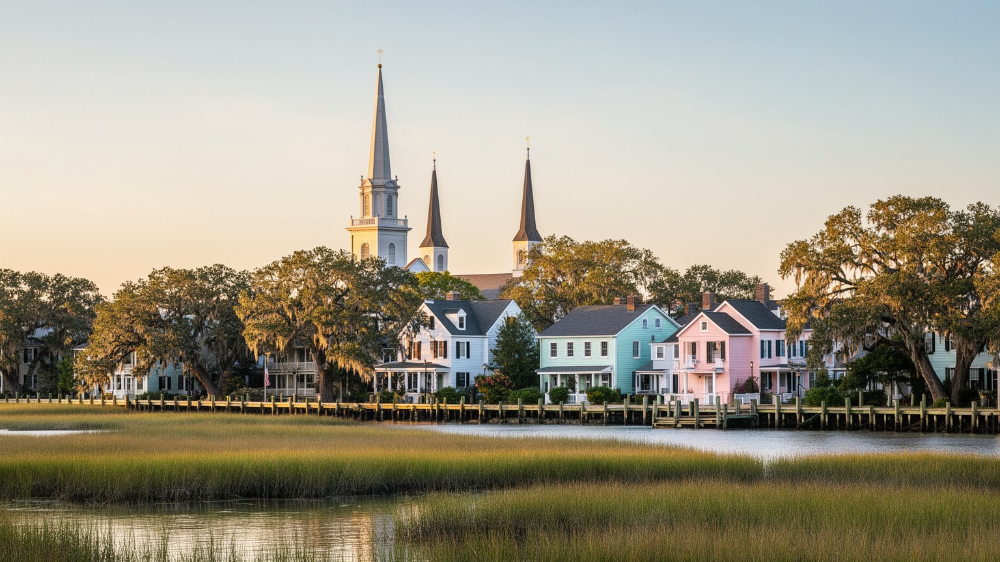
🇺🇸 アメリカ合衆国 / 北米 / World City Atlas
大西洋港、奴隷制の記憶、ローカントリーの水辺、観光都市の美しさ、軍事と航空産業、住宅費、高潮と洪水が重なる南部沿岸の都市です。
都市の骨格
チャールストンはアシュリー川、クーパー川、ワンドー川が大西洋へ開く港に立ちます。半島の歴史地区、対岸の住宅地、港湾、軍事施設、島々の海岸が、観光の景観と気候リスクを同時に作ります。
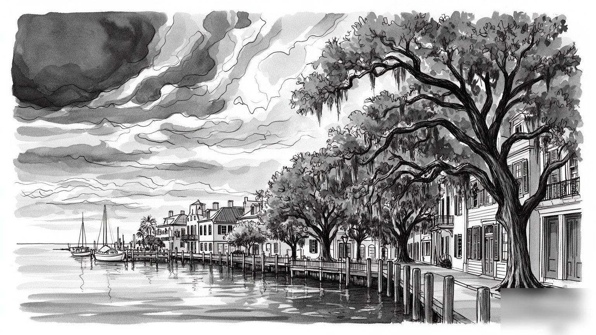
チャールストンは大西洋港、沿岸防衛、南北戦争の記憶、軍事基地を通じて米国南東部の海上回廊に深く関わります。港湾の水深、橋、島々、高潮対策は、観光だけでなく安全保障と貿易の焦点です。港の判断も響きます。
港湾物流、航空機製造、観光、大学、医療、軍関連の仕事が都市圏を支えます。ホテル、清掃、飲食、港湾、建設、介護の労働も厚く、低賃金と住宅費の上昇が同じ成長圏の中でぶつかります。長い通勤時間も焦点です。
教会塔、黒人教会、ユダヤ系共同体、ガラ文化、食、音楽、保存運動が街の記憶を作ります。信仰は観光名所ではなく、奴隷制、解放、教育、相互扶助、葬送を支えた地域の基盤として残ります。祈りは記憶の場です。
歴史街区、港、庭園、海辺、食文化は訪問者を引き寄せますが、住民には家賃、交通渋滞、浸水、観光混雑、短期賃貸、学校差が日常の焦点です。美しい街ほど生活の負担も見える都市です。住民の日常の声も重要です。
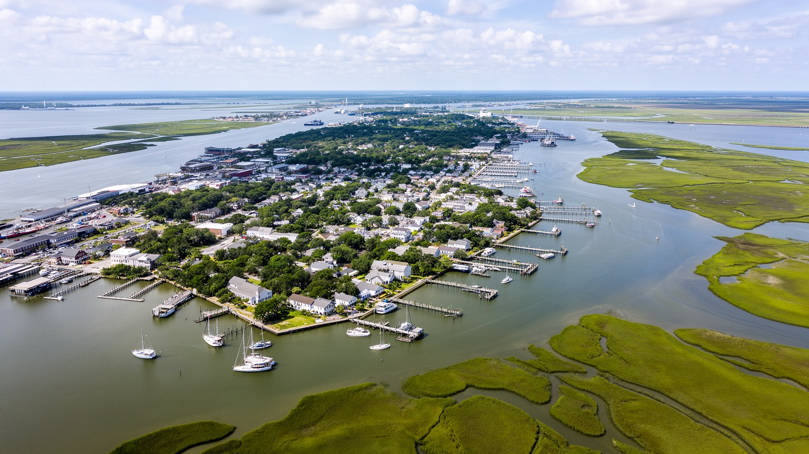
チャールストンは、アシュリー川とクーパー川に挟まれた半島から始まり、ワンドー川、湿地、海浜島、入江へ広がる低地の都市です。旧市街の整った街路や教会塔は乾いた歴史都市に見えますが、実際には潮位、排水、橋、堤防、埋め立て地の上に成り立っています。港は大西洋へ開く入口であり、米国南東部の物流、軍事、観光をつなぐ結節点です。水辺の美しさは、同時に洪水や高潮への脆さでもあります。半島の狭さは歩きやすい観光地を作る一方、車の流入、駐車、避難、住宅供給を難しくします。対岸のマウントプレザント、ノースチャールストン、サマービル方面へ住宅地が広がるほど、橋と幹線道路への依存は強まります。チャールストンの地形を読むことは、港町の絵葉書ではなく、水と土地の交渉を読むことです。高潮時に水が上がる交差点、湿地を越える道路、海へ向かう観光客の動線、港湾トラックの経路が、都市の骨格を日々試しています。低地の魅力を守るには、景観保存だけでなく、排水、住宅、交通、自然湿地の保全を同時に扱う必要があります。半島の外へ広がる新しい住宅地も、湿地を削れば将来の浸水リスクを増やします。港を深くし、道路を広げ、観光地を磨くほど、水辺の自然が都市を守る機能も評価し直さなければなりません。低地の暮らしは、水を遠ざける技術と水を受け入れる設計の両方を求めます。
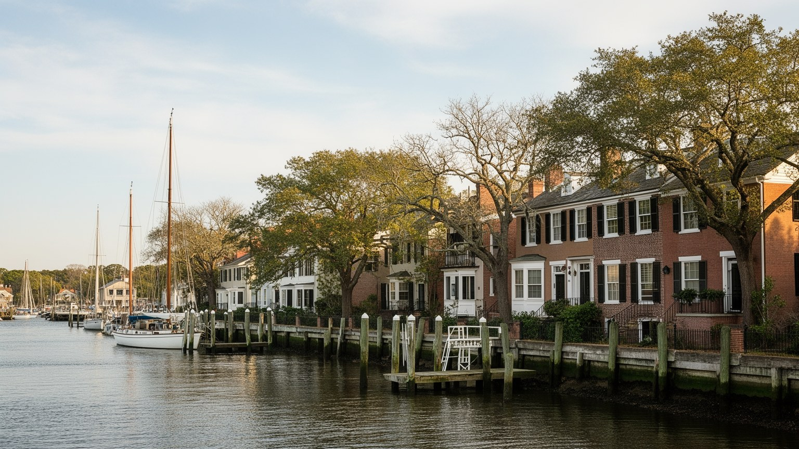
チャールストンを語るとき、奴隷制の記憶を脇に置くことはできません。大西洋奴隷貿易で連れて来られた多くのアフリカ系の人びとがこの港を通り、米国南部のプランテーション経済、米、藍、綿、港湾商業を支えさせられました。美しい歴史住宅、石畳、教会、庭園の背後には、奴隷労働、売買、市場、家内労働、職人仕事、抵抗、家族分断の歴史があります。都市はその富で繁栄し、同時に暴力の制度を日常化しました。解放後も黒人住民は教会、学校、相互扶助、政治参加を通じて都市を作りましたが、ジム・クロウ、人種隔離、住宅差別、学校格差、警察との緊張は長く続きました。記念館や史跡は重要な入口ですが、記憶は建物の説明板だけに収まりません。港、墓地、教会、住宅街、市場、裁判所、観光ルートをつないで見ると、チャールストンの優雅さと不正義は同じ都市空間に重なっています。過去を正確に扱うことは、観光の雰囲気を暗くする作業ではなく、街の美しさがどのような労働と暴力の上に築かれたのかを理解するための基礎です。現在の格差や土地所有の問題も、その歴史から切り離せません。奴隷市場や邸宅の説明が変わることは、都市の名誉を傷つけるのではなく、より正確な公共記憶を作る行為です。誰が語り、誰の沈黙が続いたのかを問うほど、街歩きは深くなります。記憶の扱い方は現在の市民性も映します。
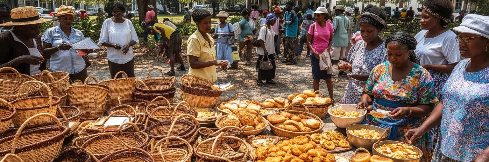
チャールストン周辺のローカントリーは、ガラ・ギーチー文化を抜きに理解できません。西アフリカに由来する言葉、食、かご編み、音楽、信仰、語り、稲作の知識は、海島と湿地の社会で受け継がれてきました。奴隷制の暴力の中で生まれた文化でありながら、単なる悲劇の記憶ではなく、家族、共同体、土地、水辺への知恵として現在も生きています。スイートグラス・バスケット、米料理、魚介、オクラ、教会の歌、墓地の習慣は、観光土産や料理名だけでは測れない深い意味を持ちます。一方で、沿岸開発、固定資産税、相続登記の問題、リゾート化、海面上昇は、長く土地を守ってきた黒人共同体を圧迫しています。文化が観光資源になるほど、誰が語り、誰が利益を得るのかが問われます。チャールストンを訪れる人は、歴史地区だけでなく、周辺の島々と湿地にある生活文化を尊重して読む必要があります。ガラ文化は過去の残響ではなく、米国南部、アフリカ大西洋世界、沿岸環境を結ぶ現在の知識体系です。保存とは展示することではなく、土地と共同体が続く条件を守ることでもあります。学校教育、地域祭、語り部、職人の仕事が続かなければ、文化は写真だけになります。観光が敬意を持つには、買う、見る、撮るだけでなく、土地の権利と生活の継続を支える姿勢が必要です。文化の継承は暮らしの継続と一体です。
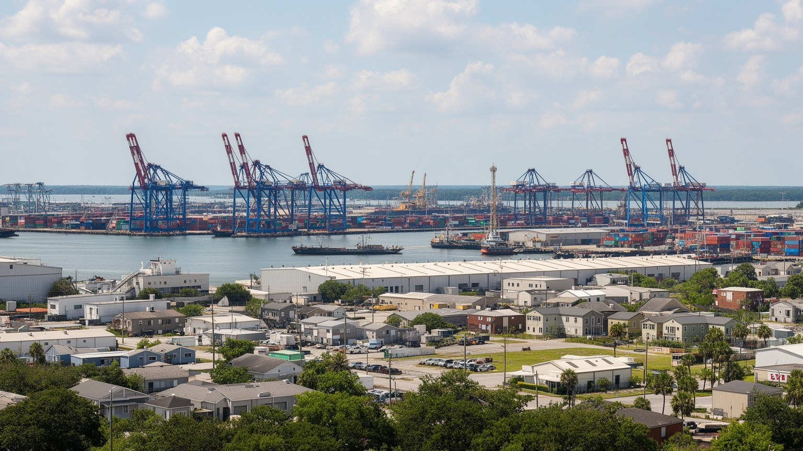
現代のチャールストン経済は、歴史観光だけで動いているわけではありません。深水港はコンテナ、完成車、部品、農産物、消費財を扱い、鉄道と高速道路を通じて内陸の製造業や小売市場へつながります。ノースチャールストン周辺には航空機製造、サプライヤー、倉庫、軍関連施設、空港が集まり、港湾都市に製造業の厚みを加えています。大学、病院、研究、観光、飲食も雇用を広げますが、成長の質は均一ではありません。港湾作業、トラック運転、倉庫、清掃、ホテル、厨房、警備、介護、建設の仕事は、都市のにぎわいを支える一方、賃金、勤務時間、住宅費、通勤距離の問題を抱えます。航空や港湾の高技能職が増えても、低賃金のサービス労働が住宅市場から押し出されれば、都市の基盤は弱くなります。チャールストンの産業を読むには、旧市街の観光収入だけでなく、港のクレーン、郊外の工場、基地、空港、ホテルの裏側を同じ地図に置く必要があります。国際貿易の変動、燃料価格、労働争議、ハリケーンによる操業停止は、地域経済へすぐ波及します。成長する沿岸都市であるほど、物流と生活費のバランスが問われます。技能訓練、交通、保育、住宅支援が不足すれば、企業誘致の成功は働く人の安定に結びつきません。産業の強さは、港を出入りする貨物量だけでなく、地域の生活を支える賃金と移動の条件で測られます。
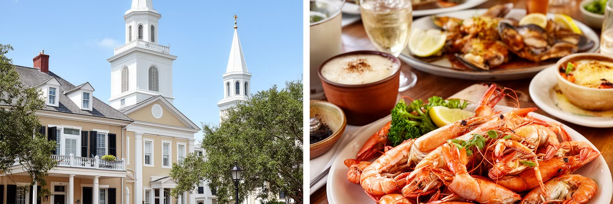
チャールストンは「聖なる都市」と呼ばれるほど教会塔が目立つ街です。英国国教会に由来する教会、黒人教会、カトリック、ユダヤ系共同体、バプテスト、メソジストなどが、港町の移民、商人、奴隷制、解放、教育、慈善、政治を支えてきました。礼拝堂は観光写真の背景である前に、葬儀、結婚、学校、救済、政治集会、差別への抵抗の場所でした。黒人教会は特に、奴隷制と人種隔離の時代に尊厳と相互扶助を保つ基盤になりました。近年の銃撃事件の記憶も、信仰の場が社会の暴力と無縁ではないことを示しています。ユダヤ系共同体の歴史は、チャールストンが大西洋世界の商業と宗教的多様性を持っていたことを物語ります。一方で、信仰の建築は保存されても、周辺の住民が高い家賃で移り住まざるを得なければ、共同体の実体は弱まります。チャールストンの宗教を読むことは、教会塔の美しさを眺めるだけでなく、祈りが教育、福祉、政治参加、記憶の継承をどう支えたかを見ることです。信仰は過去の飾りではなく、現在の格差、癒やし、和解をめぐる公共的な場でもあります。日曜の礼拝、合唱、食事支援、追悼式、歴史を語る集会は、観光客が通り過ぎる時間の外で都市を支えています。教会を残すとは、塔を残すだけでなく、その周囲で人が助け合える条件を残すことです。祈りの場は地域の安全網でもあります。
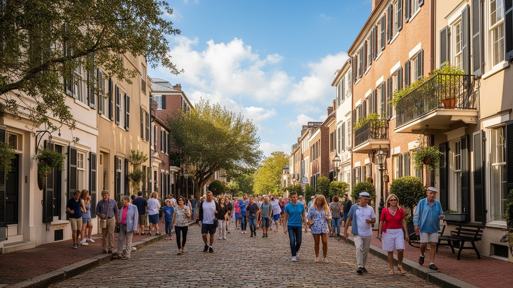
チャールストンの観光は、歴史地区の街並み、港、庭園、馬車、レストラン、博物館、海辺への近さによって成り立ちます。保存運動は多くの建物を守り、旧市街の細い路地、色彩、鉄細工、広場を現在へ残しました。その成果は大きく、米国南部の都市史を歩いて学べる貴重な環境を作っています。しかし、保存と観光は常に緊張を伴います。美しい建物が投資対象になり、短期賃貸や高級店舗が増えれば、日常の商店、賃貸住宅、学校、近隣関係は弱くなります。観光客の増加は雇用を生む一方、交通渋滞、歩道の混雑、清掃、騒音、駐車、物価上昇を住民へ押しつけることがあります。さらに、保存される物語が白人上流層の邸宅に偏れば、奴隷労働、黒人住民、職人、港湾労働者、使用人の歴史は見えにくくなります。チャールストンの保存を評価するには、外観の美しさだけでなく、誰の記憶が説明され、誰が街に住み続けられるのかを見る必要があります。観光都市として成功するほど、歴史を商品にしすぎない倫理と、生活の場としての旧市街を守る政策が重要になります。訪問者が増える街では、魅力の維持と住民の権利が同じ課題になります。博物館、ガイド、ホテル、行政が協力して混雑を分散し、語る歴史を広げ、短期滞在の利益を公共空間と住宅へ戻せるかが問われます。保存は過去を凍らせる作業ではなく、生きた都市の使い方を調整する作業です。
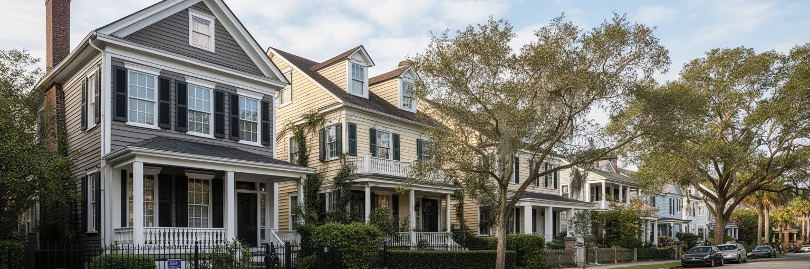
チャールストン都市圏では人口増加と観光需要が住宅市場を押し上げています。半島の歴史地区や水辺の住宅は高額化し、若い世帯、サービス労働者、黒人住民、学生、高齢者は、家賃や固定資産税、保険料、修繕費の負担に直面します。ノースチャールストン、ウェストアシュリー、マウントプレザント、サマービル、ジョンズ島方面へ住宅地が広がることで、手頃な住まいを求める人は中心から遠くなり、車通勤と渋滞に依存しやすくなります。橋、幹線道路、学校区、洪水リスク、保険、買い物の距離は、住宅価格以上に生活を左右します。古い黒人共同体では、相続登記の複雑さや開発圧力によって土地を失う危険もあります。住宅の焦点は単なる市場ではなく、歴史的な不平等、観光経済、気候リスク、交通政策が重なる都市運営です。チャールストンが美しい街であり続けるには、訪れる人を受け入れる宿泊施設だけでなく、働く人、学ぶ人、老いる人が住み続ける家を確保しなければなりません。住宅の安定は、学校、教会、職場、地域文化の継続を支える入口です。家を失うことは、街の記憶を失うことにもつながります。公共交通、手頃な賃貸、洪水保険、空き家再生、相続支援を別々に扱うだけでは不十分です。住まいを守る政策が弱ければ、観光と成長の都市は働く人を遠ざけ、自らの魅力を支える人材を失います。
チャールストンの食文化は、港、湿地、稲作、アフリカ系の知識、欧州系の調理、先住民の食材、海辺の季節感が混じり合ってきました。米、エビ、カニ、牡蠣、オクラ、豆、グリッツ、燻製、香辛料は、観光客向けの南部料理であると同時に、奴隷制、家庭料理、漁業、農業、移民、貧困の歴史を背負っています。近年のレストラン文化は世界的な評価を受け、料理人、農家、漁師、醸造、食品流通を結びつけています。しかし、洗練された食の舞台の裏側には、皿洗い、仕込み、清掃、配達、ホテル労働、長時間勤務、低賃金の現実があります。海の資源も無限ではありません。水質、湿地の保全、海面上昇、漁業規制、観光開発は、食材の未来に関わります。チャールストンを味わうことは、名物料理を消費するだけではありません。誰の調理法が名声を得て、誰が厨房で働き、誰が水辺の資源を守ってきたのかを見ることです。食は都市の記憶をやわらかく伝えますが、同時に土地、労働、人種、環境の問題を隠さず映します。市場や港の朝を想像すると、皿の上の料理が広いローカントリーの生活と結びついていることが分かります。料理の評価が高まるほど、由来の説明、働く人の待遇、地元の漁業と農業への還元が重要になります。食卓は観光の楽しみであると同時に、地域の歴史をどう共有するかを試す場です。
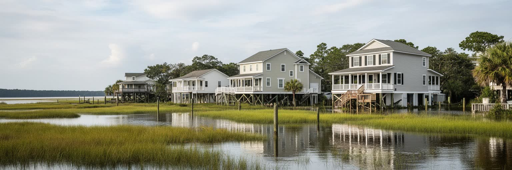
チャールストンの未来を左右する最大の条件の一つは水です。満潮時の道路冠水、強い雨の排水不良、ハリケーン、高潮、海面上昇は、旧市街、港湾、住宅地、病院、学校、観光施設を同時に脅かします。低地の都市では、数センチの潮位差が通勤、救急、物流、店の営業、住宅保険に影響します。排水ポンプ、道路かさ上げ、湿地の保全、建物の高床化、避難計画、防潮施設は必要ですが、それぞれ費用と景観への影響を伴います。さらに、気候リスクは公平には広がりません。高価な住宅は改修や保険を選べても、低所得世帯、高齢者、賃借人、車を持たない住民は避難と復旧で不利になりやすいです。港湾や観光の停止は地域経済にも響きます。チャールストンの気候対策を読むには、美しい水辺を守る話だけでなく、誰が危険な場所に住み、誰が移転や補修の費用を負担し、誰が情報へ届くのかを見る必要があります。水は都市の魅力であり、同時に都市運営の実力を測る試験でもあります。沿岸都市としての誇りは、過去の保存だけでなく、未来の安全をどう公平に作るかにかかっています。観光客が晴れた日に見る港と、住民が豪雨の日に渡る冠水道路は同じ都市です。気候適応を景観整備の延長にせず、学校、病院、職場、避難路を守る公共事業として扱えるかが信頼を左右します。水への備えは都市の約束です。
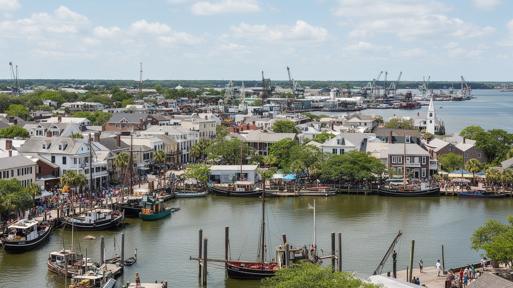
チャールストンは、人口規模だけで測れば巨大都市ではありません。それでも、世界都市として読む価値は大きい街です。大西洋奴隷貿易、南部プランテーション経済、南北戦争、黒人教会、ガラ文化、ユダヤ系共同体、港湾物流、航空産業、軍事、大学、観光、海面上昇が、一つの沿岸都市に重なっています。旧市街の美しさは本物ですが、その美しさだけを見れば、誰が建て、誰が働き、誰が排除され、誰が現在の家賃を払えなくなっているのかを見落とします。港のクレーン、教会塔、湿地、レストラン、博物館、郊外の渋滞、高潮で水に覆われる道路を結ぶと、チャールストンは過去の保存都市ではなく、現代の都市課題を凝縮した場所として見えてきます。観光で得た収益を、住宅、記憶の正確な継承、気候適応、公共交通、低賃金労働者の生活へどう戻すかが問われています。都市の魅力は、古い建物を磨くだけでは守れません。水と歴史に向き合い、住民が住み続け、訪問者が学び、労働が尊重される仕組みを作れるかが、チャールストンの未来を決めます。美しい港町は、世界史の入口であると同時に、気候時代の沿岸都市の実験場でもあります。小さく見える街に、貿易、人種、信仰、観光、軍事、環境の論点が凝縮されているからこそ、チャールストンは大都市とは違う密度で世界を映します。歩く速度で複雑さに触れられることが、この都市を読む強さです。